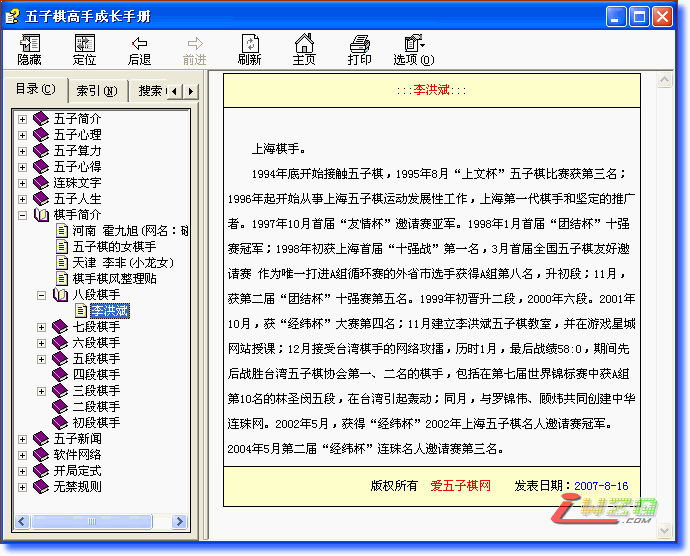

五子棋高手成长手册第二版
#1 五子棋高手成长手册第二版 作者：小丸.net 发表时间：2007-8-17 21:10:10
第二版增加了五子定式和部分棋手和简介，以及一些棋理，注意，看棋谱必须下载JAVA虚拟机，第一次观看必须连网。

 五子棋高手成长手册.rar
五子棋高手成长手册.rar#2 Re:五子棋高手成长手册第二版 作者：逆刃 发表时间：2007-8-17 22:59:05
都要了,辛苦了啊!#3 Re:五子棋高手成长手册第二版 作者：南京青青子衿 发表时间：2007-8-18 20:27:09
很不错的东东，值得收藏！#4 Re:五子棋高手成长手册第二版 作者：nara 发表时间：2007-8-20 12:26:13
不错
#5 Re:五子棋高手成长手册第二版 作者：Camel 发表时间：2007-9-29 0:32:55
很感谢LZ#6 Re:五子棋高手成长手册第二版 作者：许相公 发表时间：2007-10-7 10:14:30
正在观看，谢谢
#7 Re:五子棋高手成长手册第二版 作者：堂堂 发表时间：2007-10-7 11:15:44
xuexi#8 Re:五子棋高手成长手册第二版 作者：kims 发表时间：2007-10-24 9:44:49
顶下再看。。。。#9 Re:五子棋高手成长手册第二版 作者：古道东疯 发表时间：2007-12-2 19:28:20
开局的部分 看不到棋谱？？#10 Re:五子棋高手成长手册第二版 作者：yidefei 发表时间：2007-12-11 21:31:15
很多文章都是很好的，对了，如果后续做的能加上棋评的话就更好了。现在网络上的棋评有很多都是很有价值的，但是要一个一个地去收集确实是很累，只好麻烦了！！谢谢#11 Re:五子棋高手成长手册第二版 作者：股徒 发表时间：2008-4-29 9:59:05
谢谢!!!!!!!
#12 Re:五子棋高手成长手册第二版 作者：天上人间12 发表时间：2008-4-29 22:52:46

 太棒了，省的自己去找。太感谢LZ了。
太棒了，省的自己去找。太感谢LZ了。
#13 Re:五子棋高手成长手册第二版 作者：旅行者 发表时间：2008-6-13 0:44:20
我也是看不到棋谱！#14 Re:Re:五子棋高手成长手册第二版 作者：有志青年 发表时间：2008-6-13 7:26:46
引用：看了你之前一个帖子“雁阵”中的回复，是同样的问题，请看本站总置顶的帮助帖子，你没有安装虚拟机。
原文由 旅行者 发表于 2008-6-13 0:44:20 :
我也是看不到棋谱！
#15 Re:五子棋高手成长手册第二版 作者：冰点柔情 发表时间：2009-6-27 13:22:48
这个我下载了 看了。 其中开局定式的图 我都看不到。。。 T___T
声明 我有Java的。 是Microsoft说为了保护您的计算机不能够打开发行者不明的script.
怎么解决这个问题呢？ 这个网上所有其他的 互动图 我是看得见的。
#16 Re:五子棋高手成长手册第二版 作者：英雄九段 发表时间：2009-6-28 1:03:09
顶下再看。。。。#17 Re:五子棋高手成长手册第二版 作者：起航 发表时间：2009-8-15 17:32:40
呵呵，好东西，谢谢楼主，下载回去用了。#18 Re:五子棋高手成长手册第二版 作者：太岁 发表时间：2009-10-12 12:23:52
很不错的东东，值得收藏！#19 Re:五子棋高手成长手册第二版 作者：慕容晓文 发表时间：2009-10-23 9:29:27
|
:::朱建峰:::
|
|
|
|
|

#20 Re:五子棋高手成长手册第二版 作者：牛生蛋 发表时间：2010-3-23 20:07:03
五子棋高手成长手册第二版，我的也看不到棋谱，可是我的电脑上却已经安装了有JAVA#21 Re:五子棋高手成长手册第二版 作者：只需十步 发表时间：2010-3-29 11:53:05
好东西 要顶地
#22 Re:五子棋高手成长手册第二版 作者：冬虫 发表时间：2010-6-18 10:52:42
先收藏了，这就看去！
#23 Re:五子棋高手成长手册第二版 作者：春梦无痕 发表时间：2010-7-11 13:26:41
谢谢！学习下#24 Re:五子棋高手成长手册第二版 作者：五子米猫 发表时间：2010-9-12 11:22:34
谢谢！！谢谢！！